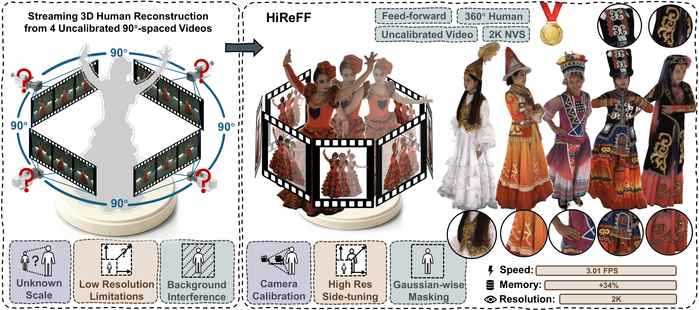
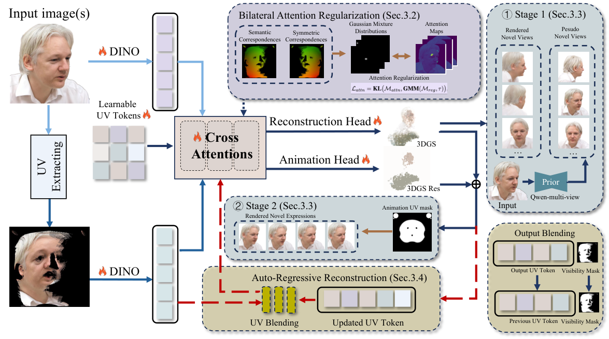
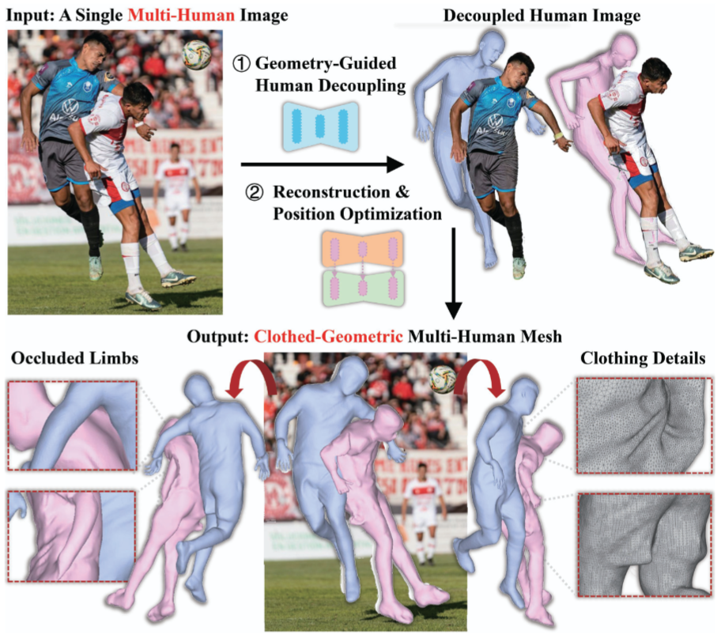
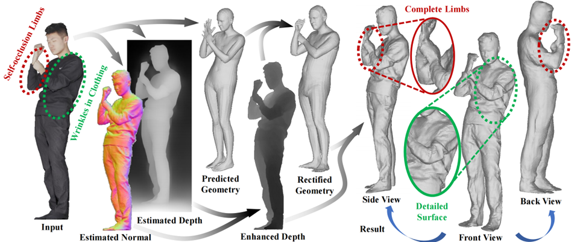
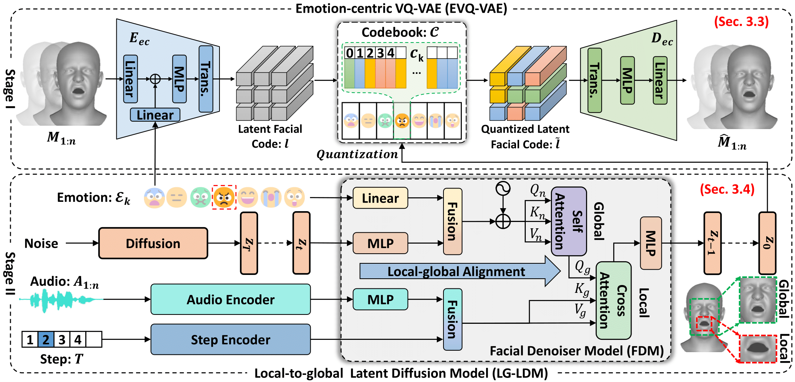
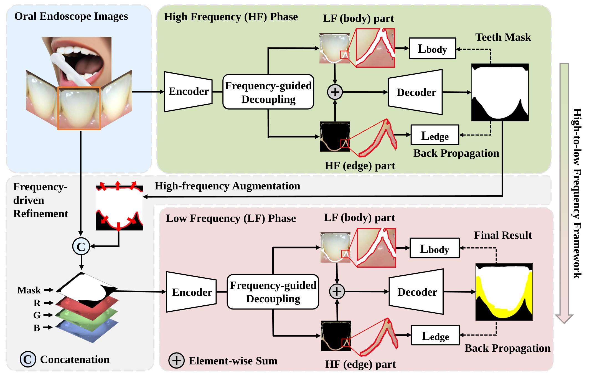

ECCV 2026
HiReFF: High-Resolution Feedforward Human Reconstruction from Uncalibrated Sparse-View Video
Feedforward 2K human reconstruction from just four uncalibrated video views.
BEIHANG UNIVERSITY
Ph.D. Student Beijing, China
I am a Ph.D. student at Beihang University, in the State Key Laboratory of Virtual Reality Technology and Systems, advised by Prof. Aimin Hao.
My research interests span Embodied AI, 3D Vision, and Human Data. I explore how visual reconstruction and human observations can support both realistic digital humans and robots that learn human skills.
I am a research intern at Tongyi Lab, Alibaba, working on embodied intelligence and human reconstruction. Previously, I worked on 3D Gaussian reconstruction at Xiaohongshu and dynamic human reconstruction at Tsinghua University.
From August 2021 to July 2022, I served as a volunteer teacher and team leader at Zhongyang Vocational Middle School in Shanxi, as part of Beihang University’s graduate volunteer teaching program. It remains an unforgettable experience in my life.

ECCV 2026
Feedforward 2K human reconstruction from just four uncalibrated video views.

NeurIPS 2026
Reconstructing animatable Gaussian heads from a single image, with support for multi-view input and streaming 4D reconstruction.

AAAI 2026
Reconstructing interacting people with detailed clothing and consistent spatial relationships.

IEEE TVCG 2026 · Online 2025
Fusing depth, surface normals, and body geometry to recover detailed 3D humans.

IEEE TVCG 2024
Audio-driven facial animation that combines synchronized lip movements with expressive facial detail.

IEEE BIBM 2024
Using image frequency to locate low-contrast dental plaque without staining.